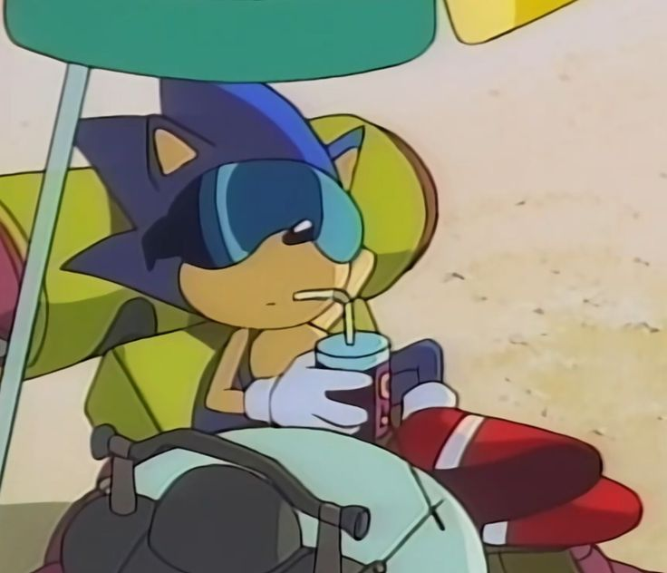
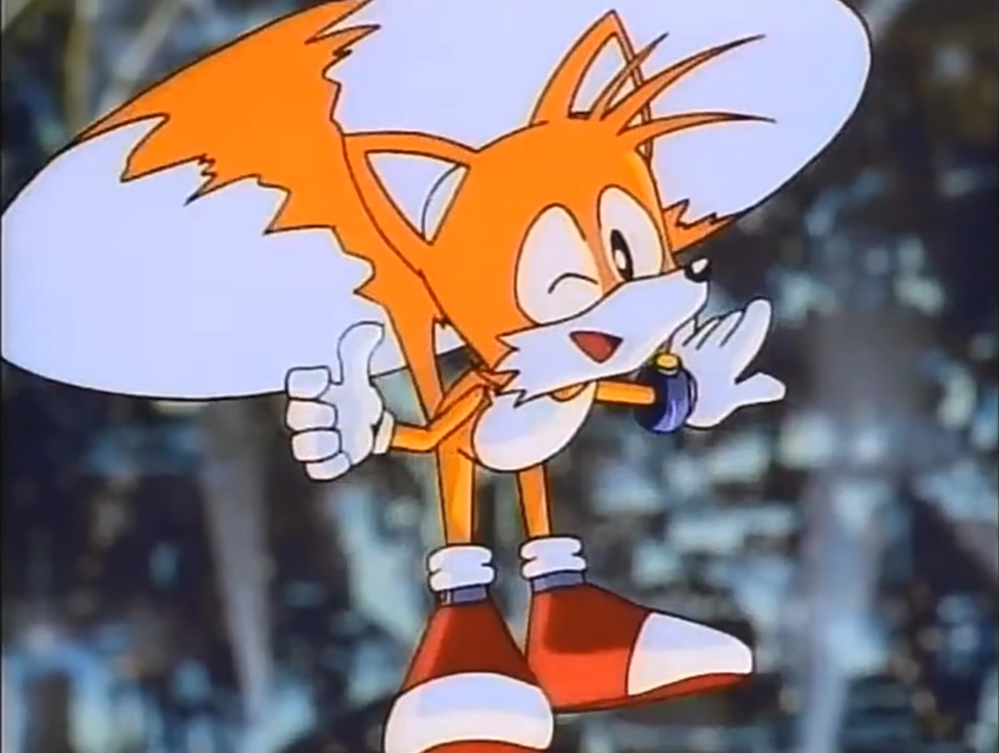
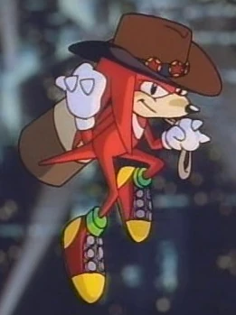
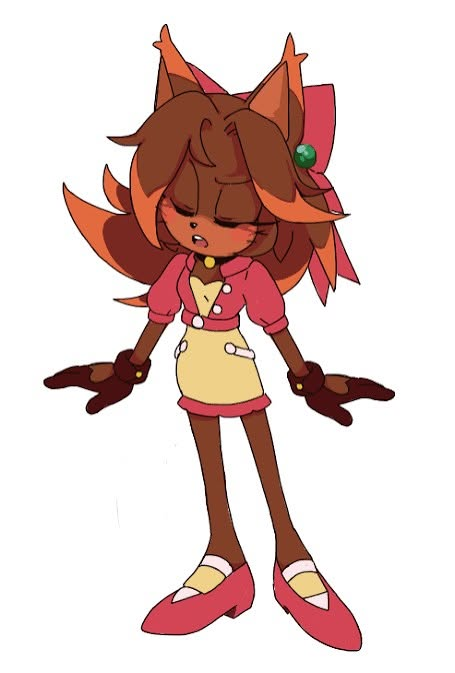
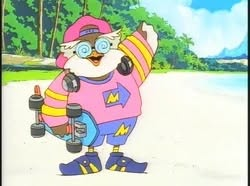
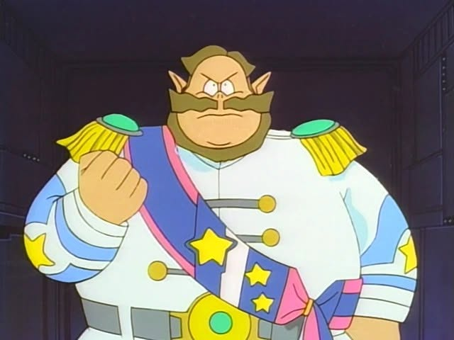
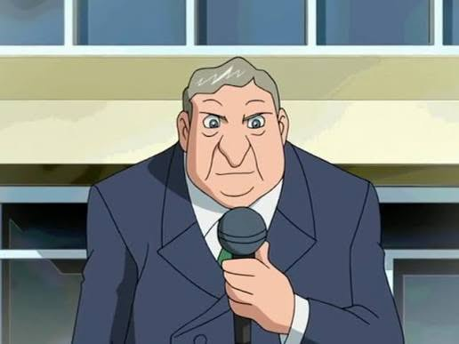

Role: Speedster & Hero
Laid-back, fast-talking, and supersonic, Sonic races into Dr. Robotnik's trap to save Planet Freedom from destruction. With his signature attitude and high-speed agility, he takes on Robotnik's forces alongside Tails and Knuckles while keeping his cool. In the end, he faces off against his mechanical twin, Hyper Metal Sonic, in a high-stakes race against time to protect their world.

Role: Sonic’s loyal young fox companion and helps engineer solutions.
Tails is Sonic's loyal twin-tailed fox sidekick who teams up with him and Knuckles to infiltrate Dr. Robotnik's Eggmanland domain. Taking to the skies in the Tornado biplane, he brings aerial agility and high-flying support into intense dogfights and perilous rescues. Even when Robotnik's trap spirals out of control, Tails stays right by Sonic's side to help save Planet Freedom.

Role: A treasure hunter and fierce fighter who joining forces to stop Robotnik.
Knuckles is the tough, independent guardian who teams up with Sonic and Tails when Dr. Robotnik lures them into Eggmanland under false pretenses. Bringing raw strength and classic 90s anime slapstick—complete with his iconic cowboy hat—he adds both muscle and personality to the adventure. Even as Robotnik's true trap and Hyper Metal Sonic threaten the world, Knuckles stands his ground in the fight to save Planet Freedom.

Role: The Mayor's Daughter
Sara is the spirited daughter of the Mayor who gets caught up in the chaos surrounding Dr. Robotnik's plots and Planet Freedom's crisis. Her presence becomes tied to Robotnik's comedic scheme to marry her, adding classic 90s anime humor to the movie's high-stakes adventure. Throughout the escalating threat of Eggmanland and Hyper Metal Sonic, she remains right in the middle of the action as Sonic and his allies fight to save their world.

Role: The President's Messenger & Pilot
Old Man Owl is an elderly, absent-minded messenger for the President who delivers news to Sonic and Tails and occasionally pilots aircraft. Despite his poor eyesight, senility, and habit of getting into reckless mishaps, he stays remarkably upbeat and insists he was once a daring racer popular with the ladies. His comical blunders and sudden bursts of energy bring plenty of eccentric 90s anime humor into the movie's chaotic events.

Role: Leader of Planet Freedom
The President is the leader of Planet Freedom who relies on Sonic and his allies when major crises threaten the world's safety. Working alongside messengers like Old Man Owl, he helps coordinate responses to emergencies tied to Dr. Robotnik's schemes and the danger posed to the floating continents. Though often caught in the middle of escalating disasters, his leadership frames the broader stakes of saving Planet Freedom from destruction.

Role: Presidential Secretary & Palace Attendant
The President's Aide is the loyal, attentive attendant who serves the President and Sara inside the Presidential House in the Land of the Sky. When Dr. Robotnik's forces and Metal Robotnik crash into the palace and hold the President and his daughter hostage, he stays close by to assist them and report on the unfolding crisis. Though his screen time is brief, he helps ground the Presidential House's staff and adds to the frantic comedic energy surrounding the President's household.

Role: Role: Main Antagonist & Mad Scientist
Dr. Ivo Robotnik is the scheming mad scientist who tricks Sonic, Tails, and Knuckles into entering Eggmanland under the false pretense of stopping a power generator meltdown. His true plot is to scan Sonic's life data to power Hyper Metal Sonic, aiming to melt the polar ice caps and destroy the floating continents of Planet Freedom. Equal parts menacing and comical, he also schemes to marry the President's daughter, Sara, while unleashing his robotic doppelgänger to eliminate his blue rival.